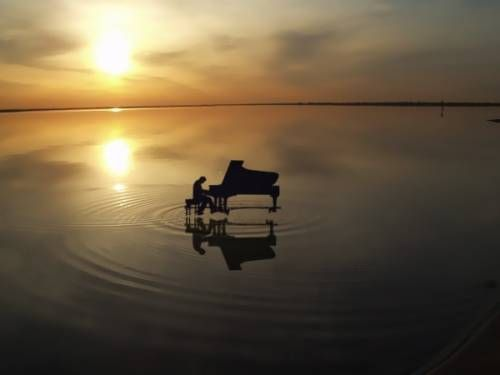

La música ha sido una parte integral de la experiencia humana desde tiempos inmemoriales. Su esencia trasciende idiomas, culturas y fronteras, funcionando como un potente medio de expresión emocional y conexión social. Desde los antiguos rituales tribales hasta las complejas composiciones contemporáneas, la música ha acompañado al ser humano en cada rincón de su desarrollo. Este arte no solo refleja los sentimientos y pensamientos de una sociedad, sino que también juega un papel fundamental en la formación de la identidad cultural y en la transmisión de tradiciones a lo largo de las generaciones, a continuación te presento una introducción a La historia de la música

Los orígenes de la música: lo primordial y lo ancestral
Los orígenes de la música son difíciles de rastrear debido a la naturaleza efímera de este arte. Sin embargo, se cree que la música surgió de las primeras formas de comunicación de los seres humanos. Los antiguos homínidos utilizaban sonidos rítmicos y melódicos para interactuar y expresar emociones, desarrollando así lo que podríamos considerar los cimientos de la música moderna. Instrumentos primitivos, como flautas hechas de hueso o instrumentos de percusión elaborados con materiales naturales, son evidencias arqueológicas que apoyan esta teoría de La historia de la música Durante las primeras civilizaciones, la música comenzaba a tener un papel más estructurado. En Mesopotamia, por ejemplo, se ha documentado el uso de escalas musicales y la creación de notación musical alrededor del año 3000 a.C. Esto marcó un cambio significativo, dado que permitió no solo la preservación de la música a lo largo del tiempo, sino también el estudio y la enseñanza sistemática de este arte. El desarrollo de sistemas de notación musical en civilizaciones como la egipcia y la griega también jugó un papel crucial en esta evolución musical. La música no solo era un medio de entretenimiento, sino que también se utilizaba en rituales religiosos y celebraciones, mostrando su importante rol en la vida cotidiana de estas culturas.
La música en la antigüedad: manifestaciones culturales
A medida que las civilizaciones avanzaban, la música se convertía en un aspecto central de la vida social y cultural. En la antigua Grecia, la música estaba intrínsecamente unida al teatro, la poesía y la filosofía. Pensadores como Platón y Aristóteles discutieron sobre el papel de la música en la formación del carácter y su influencia moral en los individuos. La música griega estaba organizada en escalas y modos, lo que sentó las bases para la teoría musical occidental. Los instrumentos, como la lira y el aulos, eran fundamentales en los espectáculos dramáticos y celebraciones, mostrando el profundo vínculo entre la música y otras formas de arte. La música también floreció en la antigua Roma, aunque a menudo se vio influenciada por la cultura griega. La música estaba presente en eventos públicos, banquetes y celebraciones religiosas, y los romanos desarrollaron su propio conjunto de instrumentos musicales. Con la expansión del Imperio Romano, la música se difundió a través de Europa y el norte de África, sirviendo como un vehículo para la integración cultural. Sin embargo, fue en la Edad Media donde la música comenzó a convertirse en un arte reconocido y estudiado más formalmente.
Desarrollo de la música en la Edad Media y el Renacimiento
En la Edad Media, la música experimentó una transformación notable. La música religiosa, especialmente la música sacra, ocupó un lugar preeminente en la vida cultural. Con el auge del cristianismo, muchos compositores comenzaron a crear obras que formaban parte de ritos litúrgicos; el canto gregoriano es uno de los estilos más representativos de esta época. Esta música monofónica, caracterizada por su simplicidad y solemnidad, era interpretada en iglesias y monasterios, y se consolidó como un elemento central en la práctica religiosa de la época. El desarrollo de la polifonía durante los siglos XII y XIII fue un hito importante. La polifonía permite que múltiples líneas melódicas se canten simultáneamente, enriqueciendo la textura musical y abriendo nuevas posibilidades para la composición. Durante el Renacimiento, la música sacra y profana floreció. Compositores como Josquin des Prez y Palestrina elevaron la música a nuevas alturas, explorando las posibilidades vocales y creando obras que son admiradas hasta hoy en día. La música se convirtió en una forma de arte apreciada no solo en contextos religiosos, sino también en la vida cortesana y la cultura popular.
La música en la era moderna: del Barroco al Clasicismo
Con la llegada del Barroco en los siglos XVII y XVIII, la música continuó evolucionando a un ritmo acelerado. Este periodo se caracteriza por la complejidad musical y la expresividad emocional. Compositores como Bach y Vivaldi introdujeron nuevas técnicas de composición y géneros como el concerto y la sonata. Su trabajo no solo aumentó las posibilidades expresivas de la música, sino que también estableció las bases para futuras obras maestras en la música clásica. Posteriormente, el Clasicismo trajo consigo una mayor claridad y equilibrio en la estructura musical. Mozart y Haydn fueron figuras destacadas de esta era, creando sinfonías, óperas y música de cámara que sentaron las bases de las formas musicales que aún se enseñan en la actualidad. La búsqueda de la belleza y la perfección en la música fue un objetivo primordial, y la influencia del clasicismo sigue siendo evidente en muchos géneros y formas musicales contemporáneas.
La música contemporánea: géneros y transformaciones
El siglo XIX trajo consigo una explosión de innovación musical, dando lugar a una diversidad de géneros y estilos. La música romántica se centró en la expresión de emociones personales, donde compositores como Chopin y Tchaikovsky exploraron la individualidad y la emoción a través de su trabajo. Con el tiempo, el auge de la revolución industrial y la proliferación de nuevos medios de comunicación, como la radio y la grabación, revolucionaron la forma en que la música se consumía y se compartía. Esto abrió las puertas a géneros como el jazz, el blues, el rock y más tarde el pop, cada uno con su propia identidad y base de seguidores apasionados. En la actualidad, la música se ha vuelto aún más accesible gracias a la tecnología digital. Las plataformas de streaming han transformado la industria musical, permitiendo que artistas independientes lleguen a audiencias globales sin necesidad de una discográfica tradicional. Además, los avances en la producción musical han permitido una mayor experimentación y fusión de estilos, enriqueciendo aún más el paisaje musical contemporáneo.
Reflexiones finales sobre La historia de la música
Desde sus orígenes primitivos hasta su manifestación contemporánea, la historia de la música es un recorrido fascinante que refleja la evolución de la humanidad. La música ha sido un vehículo de expresión emocional, un medio de comunicación, y un importante reflejo de la cultura y la sociedad en cada época. A medida que avanzamos hacia el futuro, es esencial valorar el papel que la música ha jugado en nuestras vidas y cómo continuará desarrollándose a medida que la tecnología y las influencias culturales cambien. La música no solo es una forma de arte, sino que también es un reflejo de nuestras experiencias compartidas y de nuestras emociones individuales. A través de su historia, hemos visto cómo ha evolucionado y se ha adaptado, y es seguro decir que siempre seguirá siendo un componente vibrante y fundamental de nuestra existencia. Ya sea que se trate de canciones que evocan recuerdos, conciertos que unen a multitudes o simples melodías que acompañan a nuestros momentos cotidianos, la música seguirá siendo un poderoso canal de conexión humana y un arte que enriquecerá nuestras vidas por generaciones venideras.
Creditos al autor: